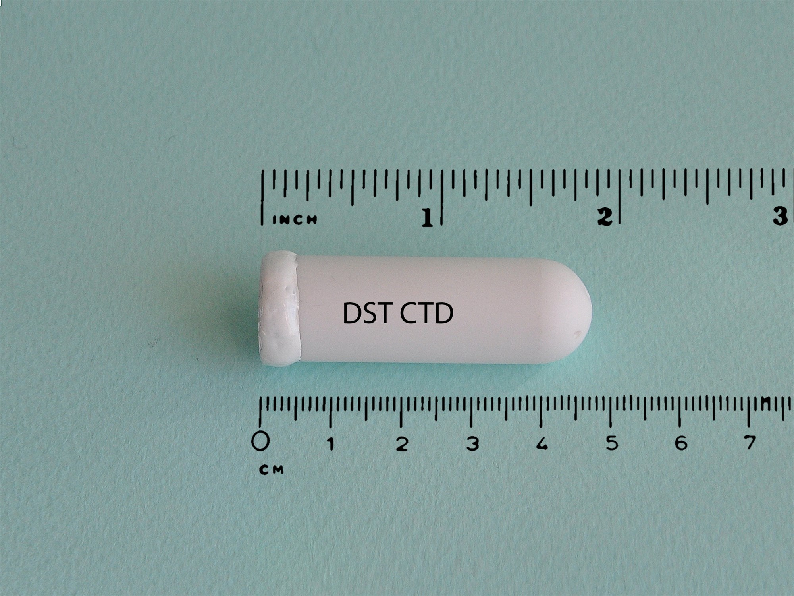
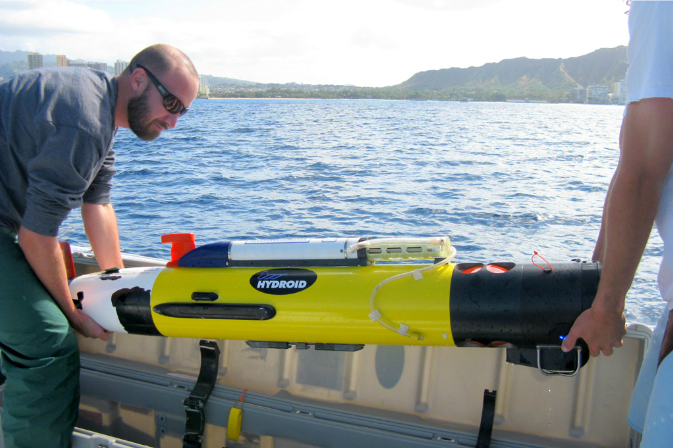
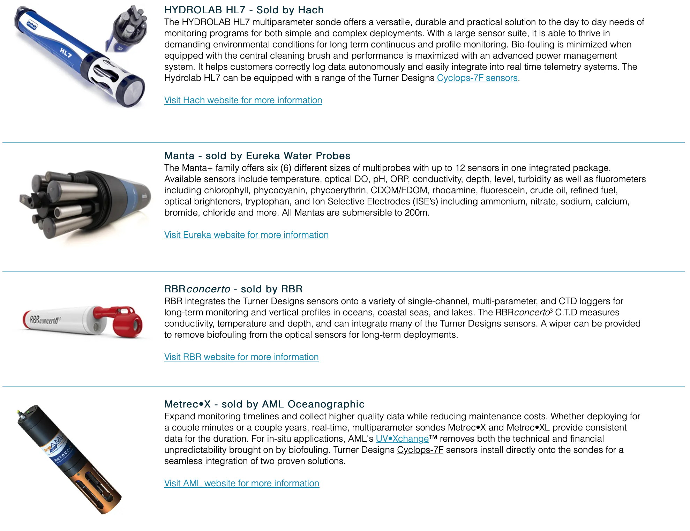
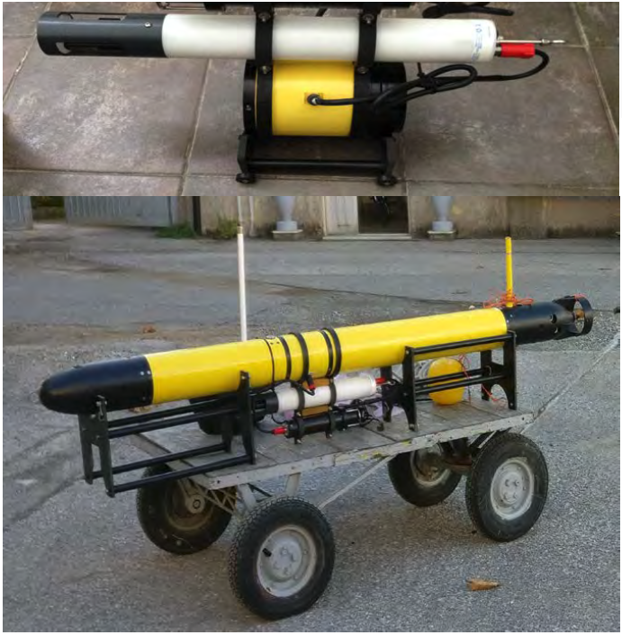

Oceanographic Sensors
Conductivity, Temperature and Depth
Salinity and Temperature as a function of Depth are commonly measured by sensor probes called CTD (Conductivity-Temperature-Depth)
A CTD device’s primary function is to detect how the conductivity and temperature of the water column changes relative to depth.
Remember that Conductivity is a proxy for Salinity, which is then calculated using non-linear regression equations
Temperature: Thermometers
Depth: pressure sensors (strain gauge that measure deformations, or quartz-based sensors that measure vibration frequency)
They have a settling time, typically between 0.2-0.6 s. This must be taken into account when installed as a payload on a robot.
- Often, CTDs are attached to a much larger metal frame called a rosette, which may hold water-sampling bottles that are used to collect water at different depths, as well as other sensors that can measure additional physical or chemical properties.
|
|
The CTD (standing for “Conductivity, Temperature, and Depth”) is a vital instrument when conducting scientific research on ships. Learn more about the CTD and how it functions in this video from The Hidden Ocean 2016: Chukchi Borderlands expedition. Video courtesy of Caitlin Bailey, GFOE, The Hidden Ocean 2016: Chukchi Borderlands, Oceaneering-DSSI. Available at https://oceanexplorer.noaa.gov/facts/ctd.html.
Knowledge obtained from CTD devices can provide a more detailed understanding of the ocean water’s characteristic through the entire water column, which is crucial for understanding the physics involved. The physics in turn allow biologists to understand why the biology is present or not present at different depths and why the chemical makeup of the water changes over depth. The CTD is the key to understanding the physics, chemistry, and biology of the water column.
|
 |
 |
Left: Star-Oddi mini CTD Right: Deployment of a Remus AUV, University of Hawaii at Manoa
- Smaller CTDs have limited computations and memory. Need to be carefully programmed depending on the mission length.
- Installing it on a robot can overcome some of these limitations.
Multi-parameters probes
- CTD plus water quality measurements
- pH
- Dissolverd Oxigen
- Clorophyll
- Turbidity
- Nitrate/Nitrogen
- Ammonium
- Chloride
- …
Some examples
|
 |
Multi-parameter probe on a robot
|
 |
There are much more sensors!
See for example this great page from WHOI